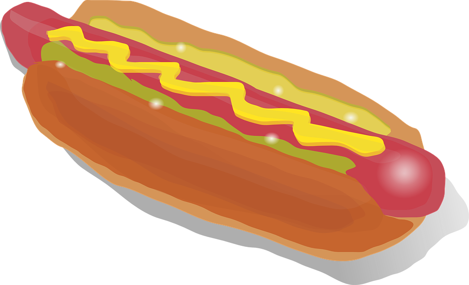

This is the how-to-cook guide for hotdogs!
A hotdog is a food consisting of a grilled or steamed sausage served in the slit
of a partially sliced bun.[4] The term hot dog can also refer to the sausage itself.
The sausage used is a wiener (Vienna sausage) or a frankfurter
(Frankfurter Würstchen, also just called frank). The names of these sausages also commonly
refer to their assembled dish.
Ingredients:
Steps for cooking a hotdog.
-----------------------------------------------------------------------------------------------------------
-----------------------------------------------------------------------------------------------------------